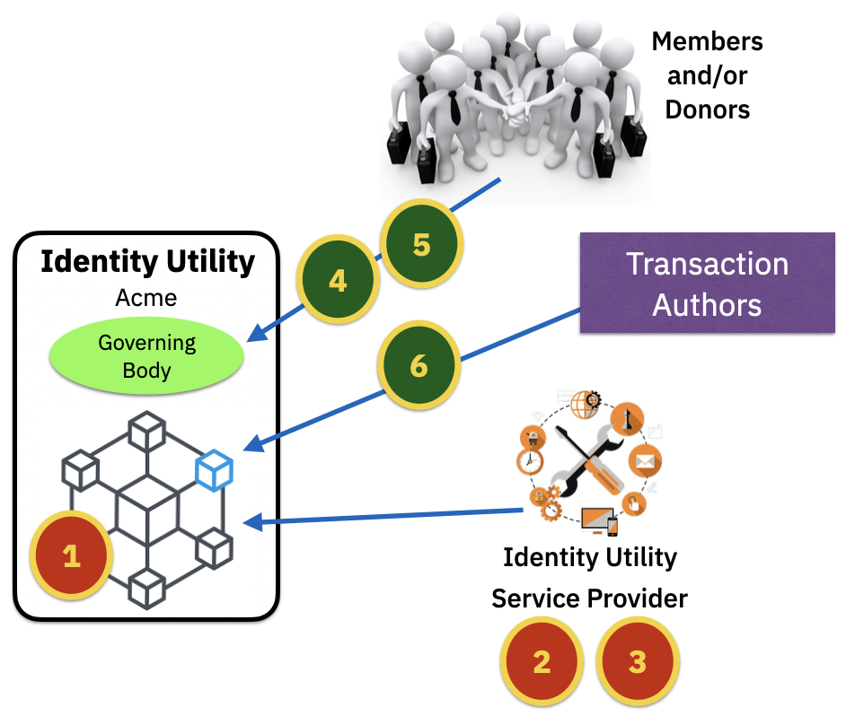

Business Model
When a consortium of organizations such as those associated with the Bedrock Business Utility come together to operate a public identity utility there are several factors that need to be considered with respect to a sustainable business model.

Identity Utility Networks have specific income and expense characteristics that are addressed by the principles, polices and procedures outlined in their governance frameworks.
| Expenses | Income |
|---|---|
| 1. Node Hosting | 4. Consortium Membership |
| 2. Network Operation and Maintenance Services | 5. Community Donations |
| 3. Consortium Governance | 6. Transaction Revenue |
Utility Operations¶
Node Hosting¶
General Concept¶
The deployment of decentralized identity solution based on distributed ledger technology (i.e.: blockchain ledgers) implies that there will not be a single centralized entity that owns and operates the ledger or the nodes attached to the ledger. The governing body of a distributed ledger owns the responsibly for defining the technology that is used to establish and run the ledger. However, it is the responsibility of each node owner to provide an operational compute node that meets the requirements of the governing body. Fulfillment of the node owner's responsibilities comes at a cost regardless of their decision to mange the node themselves or to pay a hosting provider.
Some governing bodies may place diversity requirements on node owners. These requirements may include restrictions such as but not limited to:
- Number of nodes hosted in a specific data center
- Number of nodes hosted in a geolocation
- Number of nodes running on the IaaS
- Number of nodes hosted by the same hosting provider
BBU Perspective¶
Any member of the Bedrock Business Utility that is required to host a utility infrastructure node is considered a Steward and is responsible for the financial demands of hosting a node. Such expenditures are considered out-of-pocket expenses and are not related to the members annual membership obligations. However, the BBU-GF does recognize the infrastructure contributions of Stewards and MUST adjust membership fees accordingly.
Stewards MUST adhere to the Member Technical and Organizational Policies set forth in the Controlled Documents of the BBU-GF.
Network Operation and Maintenance Services¶
General Concept¶
The management of a distributed ledger MUST be administered by skilled personnel that is familiar with:
- designing, building, testing and deployment of networks based on distributed ledger technology (DLT)
- maintaining and releasing reliable versions of a DLT
- onboarding and configuration of nodes
- monitoring and tuning of Hyperledger Indy networks
The governing body of a public identity utility is responsible for hiring in-house or external resources to accomplish these tasks. The cumulative costs of such services have a direct impact on the financial budget for the Utility.
The ToIP Foundation recognizes the importance of the services of Utility Service Providers and has established a dedicated Utility Foundry Working Group to aid governing bodies in selection and hiring of such providers. For example, access to proven request-for-proposal (RFP) templates. Typically, a governing body would initiate a bidding process for an annual contract with the necessary service-level-agreements (SLAs).
BBU Perspective¶
The Governing Board of the Bedrock Business Utility with advice from the Finance Committee and Technical Steering Committee will hire personnel responsible for the operation and maintenance of the Utility.
Consortium Governance¶
General Concept¶
The development and maintenance of a governance framework complete with legal instruments is no small task. The governing body of a public identity utility may establish a Governance Framework Working Group to handle the effort internally or the governing body may leverage the services of a Utility Service Provider for all or portions of the effort.
The ToIP Foundation recognizes the complexity of this task and has established a dedicated Utility Foundry Working Group to provide templates for governance frameworks along with access to experienced service providers.
BBU Perspective¶
The Governing Board of the Bedrock Business Utility leverages the inexpensive volunteer services of its members to form a Governance Framework Working Group that is responsible for the task.
Utility Revenue¶
Consortium Membership¶
General Concept¶
A public identity utility serves the needs of interested stakeholders by allowing for both read and write transactions. While read transactions are generally publicly accessible and free, write transactions are typically fee-based. Governing bodies can treat write transactions as an entitlement of membership and charge members for participation in the Utility.
BBU Perspective¶
The Governing Board of the Bedrock Business Utility publishes a fee schedule for participation in the Utility. These fees are the only guaranteed source of income.
Community Donations¶
General Concept¶
Meeting budgetary requirements via subsidized donations is not a recommended business model. However, donations are always possible and often welcomed.
BBU Perspective¶
While the Governing Board of the Bedrock Business Utility MAY accept donations, such income is not an assumed source of income.
Transaction Revenue¶
General Concept¶
Users of a permissioned ledger, known as Transaction Authors, have a desire to submit transactions to the Utility but they may not own the entitlements to perform those writes. The governing body of a public identity utility may charge fees for write access. They may also charge different fees for the different types of data writes allowed to the ledger. Transactional revenue can be accomplished in a number of ways such as but not limited to:
- Centralized endorser operated by the Utility
- Utility tax on endorsers who collect directly from Transaction Authors
- Selling write entitlements to endorsers and/or Transaction Authors
BBU Perspective¶
The Bedrock Business Utility Governance Framework does not collect revenue from transaction fees. The exchange of payment (value) between the Transaction Endorser and a Transaction Author is out-of-scope. Transaction Endorsers are free to charge any fee they desire for access to their write transaction entitlements.